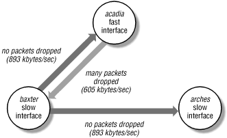

13.2. MAC and IP layer tools
The tools covered in this section operate
at the MAC and IP layers of the network protocol stack. Problems that
manifest themselves as NFS or NIS failures may be due to an improper
host or network configuration problem. The tools described in this
section are used to ascertain that the basic network connectivity is
sound. Issues that will be covered include setting network addresses,
testing connectivity, and burst traffic handling.
13.2.1. ifconfig: interface configuration
ifconfig sets or examines the characteristics of
a
network interface, such
as its IP
address or availability. At boot time,
ifconfig
is used to initialize network interfaces, possibly doing this in
stages since some information may be available on the network itself
through NIS. You can also use
ifconfig to
examine the current state of an interface and compare its address
assignments with NIS map information. Interfaces may be physical
devices, logical devices associated with a physical network
interface, IP tunnels, or pseudo-devices such as the loopback device.
Examples of physical devices include Ethernet interfaces or packet
drivers stacked on top of low-level synchronous line drivers. IP
tunnels are point-to-point interfaces that enable an IP packet to be
encapsulated within another IP packet, appearing as a physical
interface. For example, an IPv6-in-IPv4 tunnel allows IPv6 packets to
be encapsulated within IPv4 packets, allowing IPv6 traffic to cross
routers that understand only IPv4.
13.2.1.1. Examining interfaces
To list all available network interfaces,
invoke
ifconfig with the
-a
option:
[30]
% ifconfig -a
lo0: flags=1000849<UP,LOOPBACK,RUNNING,MULTICAST,IPv4> mtu 8232 index 1
inet 127.0.0.1 netmask ff000000
hme0: flags=1000843<UP,BROADCAST,RUNNING,MULTICAST,IPv4> mtu 1500 index 2
inet 131.40.52.126 netmask ffffff00 broadcast 131.40.52.255
lo0: flags=2000849<UP,LOOPBACK,RUNNING,MULTICAST,IPv6> mtu 8252 index 1
inet6 ::1/128
hme0: flags=2000841<UP,RUNNING,MULTICAST,IPv6> mtu 1500 index 2
inet6 fe80::a00:20ff:fe81:23f1/10
hme0:1: flags=2080841<UP,RUNNING,MULTICAST,ADDRCONF,IPv6> mtu 1500 index 2
inet6 fec0::56:a00:20ff:fe81:23f1/64
hme0:2: flags=2080841<UP,RUNNING,MULTICAST,ADDRCONF,IPv6> mtu 1500 index 2
inet6 2100::56:a00:20ff:fe81:23f1/64
In this example,
ifconfig lists four different
interfaces,
lo0,
hme0,
hme0:1, and
hme0:2.
lo0 is the loopback pseudo-device used by IP to
communicate between network applications that specify the local host
on both end-points.
hme0 is the actual physical
Ethernet device configured on the host. Note that
lo0 is listed in two different lines: the first
line reports the loopback configuration in use by IPv4, and the third
line reports the loopback configuration in use by IPv6. IPv4
specifies 127.0.0.1 as the loopback address; IPv6 specifies ::1/128.
Similarly, the second line reports the IPv4 address used by the
hme0 device (131.40.52.126), and the fourth line
reports the device's IPv6 link-local address
(fe80::a00:20ff:fe81:23f1/10).
Solaris supports multiple logical interfaces associated with a single
physical network interface. This allows a host to be assigned
multiple IP addresses (even if the host only has a single network
interface). This is particularly useful when a host communicates over
various IPv6 addresses. In this example,
hme0:1
and
hme0:2 are logical interfaces associated
with the physical network interface
hme0.
hme0:1 uses the site-local IPv6 address
fec0::56:a00:20ff:fe81:23f1/64, and
hme0:2 uses
the global IPv6 address 2100::56:a00:20ff:fe81:23f1/64.
To examine a particular network interface, invoke
ifconfig with its name as an argument. By
default, the IPv4 interface configuration is reported, unless you
specify the address family you are interested in, as in the third
example:
% ifconfig hme0
hme0: flags=1000843<UP,BROADCAST,RUNNING,MULTICAST,IPv4> mtu 1500 index 2
inet 131.40.52.126 netmask ffffff00 broadcast 131.40.52.255
% ifconfig lo0
lo0: flags=1000849<UP,LOOPBACK,RUNNING,MULTICAST,IPv4> mtu 8232 index 1
inet 127.0.0.1 netmask ff000000
% ifconfig hme0 inet6
hme0: flags=2000841<UP,RUNNING,MULTICAST,IPv6> mtu 1500 index 2
inet6 fe80::a00:20ff:fe81:23f1/10
If the specified interface does not exist on the system or is not
configured into the kernel,
ifconfig reports the
error "No such device."
The
flags field is a bitmap that describes
the
state of the interface. Values for the flags may be found in
/usr/include/net/if.h. The most common settings
are:
- UP
- The network interface has been marked up and is enabled to send or
receive packets.
- RUNNING
- Kernel resources, such as device driver buffers, have been
allocated to the interface to allow it to handle packets. An
interface can be marked UP but not be running if the kernel is having
trouble getting resources assigned to the interface. This is usually
never a problem for Ethernet interfaces, but may surface when
synchronous serial lines or fiber optic links are used. Note that
Solaris hosts always have this flag set, regardless of the state of
the interface.
- BROADCAST
- A valid broadcast address has been assigned to this interface. The
interface reports its broadcast address when queried, and broadcast
packets can be sent from the interface. There are no broadcast
addresses in IPv6 -- their function is superseded by multicast
addresses
- LOOPBACK
- The interface is a loopback device: packets
sent
out on the device are immediately placed on a receive queue for other
processes on the local host. Although the loopback device is
implemented entirely in software, you must configure it as though it
were a physical network interface.
- MULTICAST
- A valid multicast address has been
assigned to this interface. Listening on a
multicast address is analogous to listening to a particular band of
the radio dial. The packet is not addressed to a particular
interface, instead, it is addressed to all interfaces listening on
that multicast address.
- IPV4 / IPV6
- Indicates the version of the Internet Protocol in use. The
same interface can be configured to use
both versions, although ifconfig prints
the
respective configuration on separate lines.
The
mtu specifies the maximum transmission
unit of
the interface. IP uses path MTU discovery to determine the maximum
transmission unit size across the link. On point-to-point links, the
MTU is negotiated by the applications setting up the connection on
both sides.
Every configured physical device is
assigned a
unique index number. The kernel associates the configuration values
(IP address, MTU, etc.) with the index number for internal
bookkeeping. It provides a useful means for network programming APIs
to identify network interfaces.
The second line of
ifconfig 's output
shows the Internet (IP) address assigned to this interface, the
broadcast (IPv4 only) address, and the network mask that is applied
to the IPv4 address to derive the broadcast address. The previous
example shows the ones form of the broadcast address. When invoked by
root,
ifconfig also
displays
the interface's Ethernet address
where applicable.
The output of
ifconfig resembles the first
example
for almost all Ethernet interfaces configured to use IPv4, and the
third example for almost all Ethernet interfaces configured to use
IPv6.
ifconfig reports different state
information if the interface is for a synchronous serial line, the
underlying data link for point-to-point IP networks. Point-to-point
links are one foundation of a wide-area network, since they allow IP
packets to be run over long-haul serial lines. When configuring a
point-to-point link, the broadcast address is replaced with a
destination address for the other end of the point-to-point link, and
the BROADCAST flag is replaced by
the POINTTOPOINT flag:
this-side% ifconfig ipdptp0
ipdptp0: flags=10088d1<UP,POINTOPOINT,RUNNING,NOARP,MULTICAST,PRIVATE,IPv4> mtu 8232 index 3
inet 131.40.46.1 --> 131.40.1.12 netmask ffffff00
This interface is a serial line that connects networks 131.40.46.0
and 131.40.1.0; the machine on the other end of the line has a
similar point-to-point interface configuration with the local and
destination IP addresses reversed:
that-side% ifconfig ipdptp0
ipdptp0: flags=10088d1<UP,POINTOPOINT,RUNNING,NOARP,MULTICAST,PRIVATE,IPv4> mtu 8232 index 5
inet 131.40.1.12 --> 131.40.46.1 netmask ffffff00
Marking the line PRIVATE means that the host-to-host connection will
not be advertised to routers on the network. Note also that the
Address Resolution Protocol (ARP) is not used over point-to-point
links.
13.2.1.2. Initializing an interface
In addition to displaying the status of a
network interface,
ifconfig is used to configure the interface.
During the boot process, Solaris identifies the network interfaces to
be configured by searching for
/etc/hostname.*[0-9] and
/etc/hostname6.*[0-9] files. For example the
presence of
/etc/hostname.hme0 and
/etc/hostname.hme1 indicate that the two network
interfaces
hme0 and
hme1
need to be assigned an IPv4 address at boot time. Similarly, the
presence of
/etc/hostname6.hme0 indicates that
hme0 needs to be configured to use IPv6. You can
statically assign an IP address to the interface by specifying the
corresponding hostname in the
/etc/hostname.*[0-9] or
/etc/hostname6.*[0-9] file. Hostnames and their
corresponding IP addresses may be managed through NIS, which requires
a functioning network to retrieve map values. This chicken-and-egg
problem is solved by invoking
ifconfig twice
during the four steps required to bring a host up on the network:
- Early in the boot sequence, /etc/init.d/network
executes ifconfig to
set the IP address of the interface.
ypbind has not yet been started, so NIS is not
running at this point. ifconfig matches the
hostname in the local /etc/inet/ipnodes file,
and assigns the IP address found there to the interface. The network
mask is obtained by matching the longest possible mask in
/etc/inet/netmasks. If it is not specified, then
it is based on the class of the IPv4 address, as shown in Table 13-3 later in this chapter. The default broadcast
address is the address with a host part of all ones.
ifconfig also sets up the streams plumbing and
the link-local IPv6 addresses.
- IP routing is started by /etc/init.d/inetinit
when the machine comes up to multiuser mode. The host obtains its
site-local, global, and multicast addresses from the network IPv6
routers that advertise prefix information. Critical network daemons,
such as ypbind and the portmapper, are started
next by /etc/init.d/rpc.
- ifconfig is invoked again, out of
/etc/init.d/inetsvc, to reset the broadcast
address and network mask of the IPv4 interfaces. Now that NIS is
running, maps that override the default values may be referenced. If
you must override the NIS network masks, it is recommended to use the
/etc/inet/netmasks file with the appropriate
mask instead of hand-tailoring the values directly onto the
ifconfig command in the boot script.
For example, add the desired netmask entry to
/etc/inet/netmasks:
131.40.0.0 255.255.255.0
The boot script updates all IPv4 up and configured network devices by
invoking:
/usr/sbin/ifconfig -au4 netmask + broadcast +
The netmask argument tells
ifconfig which parts of the IP address form the
network number, and which form the host number. Any bit represented
by a one in the netmask becomes part of the
network number. The broadcast argument specifies
the broadcast address to be used by this host. The plus signs in the
example cause ifconfig to read the appropriate
NIS map for the required information. For the netmask,
ifconfig reads the netmasks
map, and for the broadcast address, it performs a logical and of the
netmask and host IP address read from the NIS
ipnodes map.
- inetd-based services and RPC services such as
NFS, the automounter and the lock manager are started once the
network interface has been fully configured. Applications that
require a fully functional network interface, such as network
database servers, should be started after the last
ifconfig is issued in the boot sequence.
Do not specify the hostname in
/etc/hostname*.[0-9] if you plan to use DHCP to
obtain your IPv4 addresses. DHCP enables
your host to dynamically obtain IPv4
addresses, as well as other client configuration information over the
network. By default, IPv6 address configuration is performed
automatically as well. Hosts obtain their addresses and configuration
information from IPv6 routers which advertise the prefix information
used by the hosts to generate site-local and global addresses. Note
that the host still invokes
ifconfig to plumb
the device and establish its link-local IPv6 address (in
/etc/init.d/network), the router discovery
daemon
in.ndpd is later
invoked in
/etc/init.d/inetinit to acquire the additional
site-local and global addresses.
13.2.1.3. Multiple interfaces
You can place a system on more
than one network by either
installing multiple physical network interfaces, or by configuring
multiple logical interfaces associated with a physical network
interface. In the first case, each network uses separate physical
media, in the second case the networks are on the same physical
media. A host that acts as a gateway between two networks is a good
example of a system connected to physically separate networks. A host
configured to run over both IPv4 and IPv6 is an example of a system
with multiple logical interfaces and a single physical network.
ifconfig can configure the interfaces one at a
time, or in groups. For example, if a host has several interfaces,
they can be enabled individually by using
ifconfig:
...
ifconfig hme0 acadia up netmask + broadcast +
...
ifconfig hme1 acadia-gw up broadcast 192.254.1.255 netmask +
As in the previous example, the plus signs (+) make
ifconfig read the
netmasks database
for its data. In both examples, the interfaces are marked
up and configured with a single command.
ifconfig can also configure multiple interfaces
at once using the
-a option:
ifconfig -auD4 netmask + broadcast +
The
-auD4 set of options instructs
ifconfig to update the netmask and broadcast
configuration for all IPv4
up devices that are
not under DHCP control.
Each network interface has a distinct hostname and IP address. One
convention for two-network systems is to append
-gw to the "primary" hostname. In
this configuration, each network interface is on a separate IP
network. Host
acadia from the previous example
appears in the NIS
ipnodes map on network
192.254.1.0 and 131.40.52.0:
192.254.1.1 acadia
131.40.52.20 acadia-gw
To hosts on the 131.40.52 network, the machine is
acadia-gw, but on the 192.254.1 network, the
same host is called
acadia.
Systems with more than two network interfaces can use any convenient
host naming scheme. For example, in a campus with four backbone
Ethernet segments, machine names can reflect both the
"given" name and the network name. A host sitting on all
four IP networks is given four hostnames and four IP addresses:
ipnodes file:
128.44.1.1 boris-bb1
128.44.2.1 boris-bb2
128.44.3.1 boris-bb3
128.44.4.1 boris-bb4
If the additional interfaces are configured after NIS is started,
then the NIS
ipnodes map is relied upon to
provide the IP address for each interface. To configure an interface
early in the boot process -- before NIS is started -- the
appropriate hostname and IP address must be in
/etc/inet/ipnodes on the local machine.
Note that you can configure the multiple physical network interfaces
to be on separate IP networks. You can turn on IP interface groups on
the host, such that it can have more than one IP address on the same
subnet, and use the outbound networks for multiplexing traffic. You
can also enable interface trunking on the host to use the multiple
physical network interfaces as a single IP address.
Trunking
offers a
measure of fault tolerance, since the trunked interface keeps working
even if one of the network interfaces fails. It also scales as you
add more network interfaces to the host, providing additional network
bandwidth. We revisit IP interface groups and trunking
in
Section 17.3, "Network infrastructure".
13.2.1.4. Mismatched host information
If you have inconsistent hostname and IP address
information in the NIS
hosts map and the local
hosts file, or the NIS
ipnodes map and the local
ipnodes file, major confusion will result. The
host may not be able to start all of its services if its host IP
address changes during the boot process, and other machines will not
know how to map the host's name to an IP address that is
represented on the network.
You will find that some network activity works fine, where others
fail. For example, you will be able to telnet into other systems from
your misconfigured host, but the other systems will not be able to
telnet into your misconfigured host. This is because the other hosts
are using a different IP address than the one
ifconfig used to configure your network
interface. You will be able to mount NFS filesystems exported without
restrictions, but will not be able to mount filesystems that are
exported to your specific host (either explicitly or via netgroups)
since the NFS server sees your request as coming from a different
host.
This kind of failure indicates that the local host's IP address
has changed between the early boot phase and the last
ifconfig. You may find that the local
/etc/inet/hosts file disagrees with the NIS
hosts map or the local
/etc/inet/ipnodes file disagrees with the NIS
ipnodes map.
Mismatched IPv4 addresses between the
hosts and
ipnodes maps will lead to inconsistent behavior
between IPv6-aware or -enabled applications and IPv6-unaware
applications, because they obtain their address information from
different sources. If the
hosts database
contains the correct information but the
ipnodes
database is corrupted, then IPv6-unaware applications will work
correctly, while the IPv6-aware and -enabled applications will
experience problems. The reverse is true when the corrupted
information
is in the
hosts database.
13.2.2. Subnetwork masks
The second
ifconfig in the boot process
installs
proper masks and broadcast addresses if
subnetting is used to divide a larger IP address space. Default
subnetwork masks and broadcast addresses are assigned based on IP
address class
, as
shown in
Table 13-3.
Table 13-3. Default broadcast addresses
|
Address Class |
Network Address |
Network Mask |
Broadcast Address |
|
Class A |
x.0.0.0 |
255.0.0.0 |
x.255.255.255 |
|
Class B |
x.y.0.0 |
255.255.0.0 |
x.y.255.255 |
|
Class C |
x.y.z.0 |
255.255.255.0 |
x.y.z.255 |
The NIS netmasks map contains an
association of network numbers and
subnetwork masks and is used to override the default network masks
corresponding to each class of IP address. A simple example is the
division of a Class B network into Class C-like subnetworks, so that
each subnetwork number can be assigned to a distinct physical
network. To effect such a scheme, the netmasks
NIS map contains a single entry for the Class B address:
131.40.0.0 255.255.255.0
Broadcast addresses are derived from the network mask and host IP
address by performing a logical and of the two. Any bits that are
not masked out by the netmask become part of the
broadcast address, while those that are masked out are set to all
ones in Solaris (other systems may set them to all zeros).
Network numbers are matched based on the number of octets normally
used for an address of that class. IP address 131.40.52.28 has a
Class B network number, so the first two octets in the IP address are
used as an index into the
netmasks map.
Similarly, IP address 89.4.1.3 is a Class A address; therefore, only
the first octet is used as a key into
netmasks.
This scheme simplifies the management of
netmasks. By listing the network number to be
partitioned, you do not have to itemize all subnetworks in the
netmasks file.
Continuing the previous example, consider this
ifconfig:
ipnodes excerpt:
131.40.52.28 mahimahi
netmasks map:
131.40.0.0 255.255.255.0
ifconfig line:
ifconfig hme0 mahimahi netmask +
Resulting interface configuration:
% ifconfig hme0
hme0: flags=1000843<UP,BROADCAST,RUNNING,MULTICAST,IPv4> mtu 1500 index 2
inet 131.40.52.28 netmask ffffff00 broadcast 131.40.52.255
Using a plus sign (+) as the netmask instead of an explicit network
mask forces the second
ifconfig to read the NIS
netmasks map for the correct mask. The
four-octet mask is logically and-ed with the IP address, producing
the broadcast network number. In the preceding example, the broadcast
address is in the ones form. Note that the
network mask is actually displayed as a
hexadecimal mask value, and not as an IP address.
A more complex example involves dividing the Class C network 192.6.4
into four subnetworks. To get four subnetworks, we need an additional
two bits of network number, which are taken from the two most
significant bits of the host number. The netmask is therefore
extended into the next two bits, making it 26 bits instead of the
default 24-bit Class C netmask:
Partitioning requires:
24 bits of Class C network number
2 additional bits of subnetwork number
6 bits left for host number
Last octet has 2 bits of netmask, 6 of host number:
11000000 binary = 192 decimal
Resulting netmasks file entry:
192.6.4.0 255.255.255.192
Again, only one entry in
netmasks is needed, and
the key for the entry matches the Class C network number that is
being divided.
You use variable length subnetting when using Classless IP
addressing. You specify how many bits of the IP address to use for
the network, and how many to use for the host by setting the
appropriate netmask entry. The format of the netmask entry is the
same as before, however, there should be an entry for each subnet
defined.
ifconfig uses the longest possible
matching mask. Say your engineering organization has been given
control of the 131.40.86.0 network (addresses 131.40.86.0 ->
131.40.86.255). You decide to partition it into four separate
subnetworks that map the four groups in your organization: Systems
Engineering, Applications Engineering, Graphics Engineering, and
Customer Support. You plan to use a single system to serve as your
gateway between the four separate subnets and the enterprise network.
Your enterprise network address is 131.40.7.22, and is therefore
connected to the 131.40.7.0 enterprise network. In order to partition
the 131.40.86 address space into four separate subnets, you need to
use the two upper bits of the last octet to identify the network.
Table 13-4 shows the distribution of the IP
addresses to the different networks.
Table 13-4. Network assignment
|
Organization |
Address Range |
Subnetwork |
|
Systems Eng |
131.40.86.0 -> 131.40.86.63 |
131.40.86.0 |
|
Applications Eng |
131.40.86.64 -> 131.40.86.127 |
131.40.86.64 |
|
Graphics Eng |
131.40.86.128 -> 131.40.86.191 |
131.40.86.128 |
|
Customer Support |
131.40.86.192 -> 131.40.86.255 |
131.40.86.192 |
The last octet of the address will have two bits of netmask and six
of host number:
11000000 binary = 192 decimal
The resulting netmask: 255.255.255.192
The resulting netmasks file is:
131.40.0.0 255.255.255.0
131.40.86.0 255.255.255.192
131.40.86.64 255.255.255.192
131.40.86.128 255.255.255.192
131.40.86.192 255.255.255.192
The first entry indicates that the Class B network 131.40.0.0 is
subnetted. The next four entries represent the four variable-length
subnets for the classless addresses for the different groups.
Addresses 131.40.86.0 through 131.40.86.255 have a subnet mask with
26 bits in the subnet fields and 6 bits in the host field. All other
addresses in the range 131.40.0.0 through 131.40.255.255 have a 24
bit subnet field. The IP address assignments for the five network
interfaces are shown in
Table 13-5.
Table 13-5. Assigning addresses to interfaces
|
Interface |
Subnetwork Range |
Broadcast |
Sample IP Address |
|
hme0 |
131.40.7.0 Backbone |
131.40.7.255 |
131.40.7.22 |
|
hme1 |
131.40.86.0 -> 131.40.86.63 |
131.40.86.63 |
131.40.86.1 |
|
hme2 |
131.40.86.64 -> 131.40.86.127 |
131.40.86.63 |
131.40.86.65 |
|
hme3 |
131.40.86.128 -> 131.40.86.191 |
131.40.86.63 |
131.40.86.129 |
|
hme4 |
131.40.86.192 -> 131.40.86.255 |
131.40.86.63 |
131.40.86.193 |
For example, the server would direct network traffic to the
hme0 interface when communicating with IP
address 131.40.7.78, since it is part of the 131.40.7.0 subnet;
hme1 when communicating with 131.40.86.32, since
it is part of the 131.40.86.0 subnet; hme2 when
communicating with 131.40.7.78, and so on.
ifconfig only governs the local machine's
interface to the network. If a host cannot exchange packets with a
peer host on the same network, then it is necessary to verify that a
datagram circuit to the remote host exists and that the remote node
is properly advertising itself on the network. Tools that perform
these
tests are
arp and
ping.
13.2.3. IP to MAC address mappings
Applications use IP addresses and hostnames
to identify remote nodes, but
packets sent on the Ethernet identify their destinations via a 48-bit
MAC-layer address. The Ethernet interface on each host only receives
packets that have its MAC address of a broadcast address in the
destination field. IP addresses are completely independent of the
48-bit MAC-level address; several disjoint networks may use the same
sets of IP addresses although the 48-bit addresses to which they map
are unique worldwide.
You can tell who makes an Ethernet interface by looking at the first
three octets of its address. Some of the most popular prefixes are
shown in
Table 13-6. Fortunately, newer diagnostic
tools such as
ethereal know how
to
map the prefix number to the vendor of the interface.
ethereal is introduced later in this chapter in
Section 13.5.2, "ethereal / tethereal".
Table 13-6. Ethernet address prefixes
|
Prefix |
Vendor |
Prefix |
Vendor |
Prefix |
Vendor |
|
00:00:0c |
Cisco |
00:20:85 |
3Com |
00:e0:34 |
Cisco |
|
00:00:3c |
Auspex |
00:20:af |
3Com |
00:e0:4f |
Cisco |
|
00:00:63 |
Hewlett-Packard |
00:60:08 |
3Com |
00:e0:a3 |
Cisco |
|
00:00:65 |
Network General |
00:60:09 |
Cisco |
00:e0:f7 |
Cisco |
|
00:00:69 |
Silicon Graphics |
00:60:2f |
Cisco |
00:e0:f9 |
Cisco |
|
00:00:f8 |
DEC |
00:60:3e |
Cisco |
00:e0:fe |
Cisco |
|
00:01:fa |
Compaq |
00:60:47 |
Cisco |
02:60:60 |
3Com |
|
00:04:ac |
IBM |
00:60:5c |
Cisco |
02:60:8c |
3Com |
|
00:06:0d |
Hewlett-Packard |
00:60:70 |
Cisco |
08:00:02 |
3Com |
|
00:06:29 |
IBM |
00:60:83 |
Cisco |
08:00:09 |
Hewlett-Packard |
|
00:06:7c |
Cisco |
00:60:8c |
3Com |
08:00:1a |
Data General |
|
00:06:c1 |
Cisco |
00:60:97 |
3Com |
08:00:1b |
Data General |
|
00:07:01 |
Cisco |
00:60:b0 |
Hewlett-Packard |
08:00:20 |
Sun Microsystems |
|
00:07:0d |
Cisco |
00:80:1c |
Cisco |
08:00:2b |
DEC |
|
00:08:c7 |
Compaq |
00:80:5f |
Compaq |
08:00:5a |
IBM |
|
00:10:11 |
Cisco |
00:90:27 |
Intel |
08:00:69 |
Silicon Graphics |
|
00:10:1f |
Cisco |
00:90:b1 |
Cisco |
08:00:79 |
Silicon Graphics |
|
00:10:2f |
Cisco |
00:a0:24 |
3Com |
10:00:5a |
IBM |
|
00:10:4b |
3Com |
00:aa:00 |
Intel |
10:00:90 |
Hewlett-Packard |
|
00:10:79 |
Cisco |
00:c0:4f |
Dell |
10:00:d4 |
DEC |
|
00:10:7b |
Cisco |
00:c0:95 |
Network Appliance |
3C:00:00 |
3Com |
|
00:10:f6 |
Cisco |
00:e0:14 |
Cisco |
aa:00:03 |
DEC |
|
00:20:35 |
IBM |
00:e0:1e |
Cisco |
aa:00:04 |
DEC |
ARP, the Address Resolution Protocol, is used to maintain tables of
32- to 48-bit address translations. The ARP
table is a dynamic collection of MAC-to-IPv4 address
mappings. To fill in the MAC-level Ethernet packet headers, the
sending host must resolve the destination IPv4 address into a 48-bit
address. The host first checks its ARP table for an entry keyed by
the IPv4 address, and if none is found, the host broadcasts an ARP
request containing the recipient's IPv4 address. Any machine
supporting ARP address resolution responds to an ARP request with a
packet containing its MAC address. The requester updates its ARP
table, fills in the MAC address in the Ethernet packet header, and
transmits the packet.
If no reply is received for the ARP request, the transmitting host
sends the request again. Typically, a delay of a second or more is
inserted between consecutive ARP requests to prevent a series of ARP
packets from saturating the network. Flurries of ARP requests
sometimes occur when a malformed packet is sent on the network; some
hosts interpret it as a broadcast packet and attempt to get the
Ethernet address of the sender via an ARP request. If many machines
are affected, the ensuing flood of network activity can consume a
considerable amount of the available bandwidth. This behavior is
referred to as an
ARP storm, and is most
frequently caused by an electrical problem in a transceiver that
damages packets after the host has cleanly written them over its
network interface.
To examine the current ARP table entries, use
arp
-a:
% arp -a
Net to Media Table: IPv4
Device IP Address Mask Flags Phys Addr
------ -------------------- --------------- ----- ---------------
hme0 caramba 255.255.255.255 08:00:20:b9:2b:f6
hme1 socks 255.255.255.255 08:00:20:e7:91:5d
hme0 copper 255.255.255.255 00:20:af:9d:7c:92
hme0 roger 255.255.255.255 SP 08:00:20:a0:33:90
hme0 universo 255.255.255.255 U
hme0 peggy 255.255.255.255 SP 08:00:20:81:23:f1
hme1 duke 255.255.255.255 00:04:00:20:56:d7
hme0 224.0.0.0 240.0.0.0 SM 01:00:5e:00:00:00
hme1 224.0.0.0 240.0.0.0 SM 01:00:5e:00:00:00
hme1 daisy 255.255.255.255 08:00:20:b5:3d:d7
The
arp -a output listing reports the interface
over which the ARP notification arrived, the IP address (or hostname)
and its Ethernet address mapping. The unresolved entry (denoted by
the
U flag) is for a host that did not respond
to an ARP request; after several minutes the entry is removed from
the table. Complete entries in the ARP table may be
static or
dynamic,
indicating how the address mappings were added and the length of
their expected lifetimes.
Solaris identifies static entries with the
S
flag. The host's own Ethernet address as well as all multicast
address entries (identified by the
M flag) will
always be static.The previous example was run on the host
roger, therefore the static nature of the entry
for its own Ethernet address and multicast entries. The absence of
the
S flag identifies a dynamic or learned
entry.
Dynamic entries are added on demand during the course of normal IP
traffic handling. Infrequently used mappings added in this fashion
have a short lifetime; after five minutes without a reference to the
entry, the ARP table management routines remove it. This ongoing
table pruning is necessary to minimize the overhead of ARP table
lookups. The ARP table is accessed using a hash table; a smaller,
sparser table has fewer hash key collisions. A host that communicates
regularly with many other hosts may have an ARP table that is fairly
large, while a host that is quiescent or exchanging packets with only
a few peers has a small ARP table.
The difference between dynamic and
permanent
entries is how they are added to the
ARP table. Dynamic entries are added on the fly, as a result of
replies to ARP requests. Permanent entries are loaded into the ARP
table once at boot time, and are useful if a host must communicate
with a node that cannot respond to an ARP request during some part of
its startup procedure. For example, a diskless client may not have
ARP support embedded in the boot PROM, requiring its boot server to
have a permanent ARP table entry for it. Once the diskless node is
running the Unix kernel, it should be able to respond to ARP requests
to complete dynamic ARP table entries on other hosts.
The
arp -a output reports a mask for every
entry. This mask is used during lookup of an entry in the ARP table.
The lookup function in the kernel applies the mask to the address
being queried and compares it with the one in the table. If the
resulting addresses match, the lookup is successful. A mask of
255.255.255.255 (all ones) means that the two addresses need to be
exactly the same in order to be considered equivalent. A mask of
240.0.0.0 means that only the upper four bits of the address are used
to find a matching address. In the previous example, all multicast
addresses use the Ethernet address corresponding to the 240.0.0.0
entry. The ARP mask does not provide much useful information to the
regular user. Be sure not to confuse this ARP mask with the netmask
specified by the
ifconfig command. The ARP mask
is generated and used only by the internal kernel routines to reduce
the number of entries that need to be stored in the table. The
netmask specified by the
ifconfig command is
used for IP routing.
A variation of the permanent ARP table
entry
is a
published
mapping. Published mappings are denoted by the
P
flag. Published entries include the IP address for the current host,
and the addresses that have been explicitly added by the
-s or
-f options (explained
later in this chapter).
Publishing ARP table entries turns a host into an ARP server.
Normally, a host replies only to requests for its own IP address, but
if it has published entries then it replies for multiple IP
addresses. If an ARP request is broadcast requesting the IP address
of a published entry, the host publishing that entry returns an ARP
reply to the sender, even though the IP address in the ARP request
does not match its own.
This mechanism is used to cope with machines that cannot respond to
ARP requests due to lack of ARP support or because they are isolated
from broadcast packets by a piece of network partitioning hardware
that filters out broadcast packets. This mechanism is also useful in
SLIP or PPP configurations. When any of these situations exist, a
machine is designated as an ARP server and is loaded with ARP entries
from a file containing hostnames, Ethernet addresses, and the
pub qualifier. For example, to publish the ARP
entries for hosts
relax and
stress on server
irie, we
put the ARP information into a configuration file
/etc/arptable and then load it using
arp -f:
irie# cat /etc/arptable
relax 08:00:20:73:3e:ec pub
stress 08:00:20:b9:18:3d pub
irie# arp -f /etc/arptable
The
-f option forces
arp to
read the named file for entries, alternatively the
-s option can be used to add a single mapping
from the command line:
irie# arp -s relax 08:00:20:73:3e:ec pub
As a diagnostic tool,
arp is useful for
resolving esoteric point-to-point connectivity problems. If a
host's ARP table contains an incorrect entry, the machine using
it will not be reachable, since outgoing packets will contain the
wrong Ethernet address. ARP table entries may contain incorrect
Ethernet addresses for several reasons:
- Another host on the network is answering ARP requests for the same IP
address, or all IP addresses, emulating a duplicate IP address on the
network.
- A host with a published ARP entry contains the wrong Ethernet address
in its ARP table.
- Either of the above situations exist, and the incorrect ARP reply
arrives at the requesting host after the correct reply. When ARP
table entries are updated dynamically, the last response received is
the one that "wins." If the correct ARP response is
received from a host that is physically close to the requester, and a
duplicate ARP response arrives from a host that is located across
several Ethernet bridges, then the later -- and probably
incorrect -- response is the one that the machine uses for
future packet transmissions.
Inspection of the ARP table can reveal some obvious problems; for
example, the three-octet prefix of the machine's Ethernet
address does not agree with the vendor's label on the front of
the machine. If you believe you are suffering from intermittent ARP
failures, you can delete specific ARP table entries and monitor the
table as it is repopulated dynamically. ARP table entries are deleted
with
arp -d, and only the superuser can delete
entries. In the following example, we delete the ARP table entry for
fenwick, then force the local host to send an
ARP request for
fenwick by attempting to connect
to it using
telnet. By examining the ARP table
after the connection attempt, we can see if some other host has
responded incorrectly to the ARP request:
# arp -d fenwick
fenwick (131.40.52.44) deleted
# telnet fenwick
...Telnet times out...
# arp -a | grep fenwick
hme0 fenwick 255.255.255.255 08:00:20:79:61:eb
An example involving intermittent ARP failures is presented in
Chapter 15, "Debugging Network Problems".
IPv6 nodes use the neighbor discovery mechanism to learn the link
layer address (MAC in the case of Ethernet) of the other nodes
connected to the link. The IPv6 neighbor discovery mechanism delivers
the functionality previously provided by the combination of ARP, ICMP
router discovery, and ICMP redirect mechanisms. This is done by
defining special ICMP6 message types: neighbor solicitation and
neighbor advertisement. A node issues neighbor solicitations when it
needs to request the link-layer (MAC) address of a neighbor. Nodes
will also issue neighbor advertisement messages in response to
neighbor solicitation messages, as well as when their link-layer
address
changes.
13.2.4. Using ping to check network connectivity
ping is similar to
arp in
that it provides information
about hosts on a network rather than
information about data that is sent on the network.
arp provides a low-level look at the MAC
addressing used by a host, but it is not that powerful for diagnosing
connectivity problems.
ping is a more general
purpose tool for investigating point-to-point connectivity problems
and areas of questionable physical network topology.
ping uses the Internetwork Control Message
Protocol (ICMP) echo
facility to ask a
remote machine for a reply. ICMP is another component of the network
protocol stack that is a peer of IP and ARP. The returned packet
contains a timestamp added by the remote host which is used to
compute the round trip packet transit time. In its simplest form,
ping is given a hostname or IP address and
returns a verdict on connectivity to that host:
% ping shamrock
shamrock is alive
% ping 131.40.1.15
131.40.1.15 is alive
The
-s option puts
ping
into continuous-send mode, and displays the sequence numbers and
transit times for packets as they are returned. Optionally, the
packet size and packet count may be specified on the command line:
ping [-s] host [packet-size] [packet-count]
For example:
% ping -s mahimahi
PING mahimahi: 56 data bytes
64 bytes from mahimahi (131.40.52.28): icmp_seq=0. time=3. ms
64 bytes from mahimahi (131.40.52.28): icmp_seq=1. time=2. ms
64 bytes from mahimahi (131.40.52.28): icmp_seq=2. time=2. ms
64 bytes from mahimahi (131.40.52.28): icmp_seq=3. time=3. ms
64 bytes from mahimahi (131.40.52.28): icmp_seq=4. time=2. ms
^C
----mahimahi PING Statistics----
5 packets transmitted, 5 packets received, 0% packet loss
round-trip (ms) min/avg/max = 2/2/3
and:
% ping -s mahimahi 100 3
PING mahimahi: 100 data bytes
108 bytes from mahimahi (131.40.52.28): icmp_seq=0. time=3. ms
108 bytes from mahimahi (131.40.52.28): icmp_seq=1. time=3. ms
108 bytes from mahimahi (131.40.52.28): icmp_seq=2. time=3. ms
----mahimahi PING Statistics----
3 packets transmitted, 3 packets received, 0% packet loss
round-trip (ms) min/avg/max = 3/3/3
The eight bytes added to each ICMP echo request in the corresponding
reply are the timestamp information added by the remote host. If no
explicit count on the number of packets is specified, then
ping continues transmitting until interrupted.
By default,
ping uses a 56-byte packet, which is
the smallest IP packet, complete with headers and checksums, that
will be transmitted on the Ethernet.
The
ping utility is good for answering questions
about whether the remote host is attached to the network and whether
the network between the hosts is reliable. Additionally,
ping can indicate that a hostname and IP address
are not consistent across several machines. The replies received when
the host is specified by name may contain an incorrect IP address.
Conversely, if
pinging the remote host by name
does not produce a reply, try the IP address of the host. If a reply
is received when the host is specified by address, but not by name,
then the local machine has an incorrect view of the remote
host's IP address. These kinds of problems are generally
machine specific, so intermittent
ping failures
can be a hint of IP address confusion: machines that do not agree on
the IP addresses they have been assigned.
If NIS is used, this could indicate that the NIS
ipnodes map was corrupted or changed
(incorrectly) since the remote host last booted. The NIS
ipnodes map supersedes the local
/etc/inet/ipnodes file,
[31] so a disparity between the two
values for a remote machine is ignored; the NIS
ipnodes map takes precedence. However, in the
absence of NIS, the failure of a remote node to answer a
ping to its hostname indicates the
/etc/inet/ipnodes files are out of
synchronization.
Larger packet sizes may be used to test connectivity through network
components that are suspected of damaging large packets or trains of
packets.
ping only sends one packet at a time,
so it won't test the capacity of a network interface. However,
it tells you whether packets close to the network's MTU can
make it from point to point intact, through all of the network
hardware between the two hosts.
Using the packet count indicators and transit times,
ping can be used to examine connectivity,
network segment length, and potential termination problems.
Electrical problems, including poor or missing cable termination, are
among the most difficult problems to diagnose and pinpoint without
repeatedly splitting the network in half and testing the smaller
segments. If
ping shows that packets are dropped
out of sequence, or that return packets are received in bursts, it is
likely that either a network cable segment has an electrical fault or
that the network is not terminated properly. These problems are more
common in older 10Base-5 and 10Base-2 networks than in newer CAT5
twisted pair networks.
For example, the following output from
ping
indicates that the network is intermittently dropping packets; this
behavior is usually caused by improper termination and is quite
random in nature:
% ping -s mahimahi
PING mahimahi: 56 data bytes
64 bytes from mahimahi (131.40.52.28): icmp_seq=0. time=3. ms
64 bytes from mahimahi (131.40.52.28): icmp_seq=1. time=2. ms
64 bytes from mahimahi (131.40.52.28): icmp_seq=16. time=1295. ms
64 bytes from mahimahi (131.40.52.28): icmp_seq=17. time=3. ms
64 bytes from mahimahi (131.40.52.28): icmp_seq=18. time=2. ms
The gap between packets 1 and 16, along with the exceptionally long
packet delay, indicates that a low-level network problem is
consuming
packets.
13.2.5. Gauging Ethernet interface capacity
Even with a well-conditioned network
and proper host configuration
information, a server may have trouble communicating with its clients
because its network interface is overloaded. If an NFS server is hit
with more packets than it can receive through its network interface,
some client requests will be lost and eventually retransmitted. To
the NFS clients, the server appears painfully slow, when it's
really the server's network interface that is the problem.
The
spray utility provides a
very coarse estimate of network interface capacity, both on
individual hosts and through network hardware between hosts.
spray showers a target host with consecutive
packets of a fixed length by making remote procedure calls to the
rpc.sprayd daemon on the remote host. After the
last packet is sent, the
rpc.sprayd daemon is
queried for a count of the packets received; this value is compared
to the number of packets sent to determine the percentage dropped
between client and server.
On its own,
spray is of limited usefulness as a
measure of the packet handling capability of a machine. The packet
containing the RPC call may be lost by the client, due to other
activity on its network interface; it may be consumed by a collision
on the network; or it may be incident to the server but not copied
from the network by the server's network interface due to a
lack of buffer space or excessive server CPU loading. Many packets
are lost on the sending host, and
spray has no
knowledge of where the packets vanish once they get pass the
application layer. Due to these factors,
spray
is best used to gauge the relative packet-handling speeds of two or
more machines.
Here are some examples of using
spray to test
various network constraints.
spray requires a
hostname and takes a packet count, delay value, and packet length as
optional arguments:
spray [-c count] [-d delay] [-l length] host
For example:
% spray wahoo
sending 1162 packets of length 86 to wahoo ...
675 packets (58.090%) dropped by wahoo
1197 packets/sec, 103007 bytes/sec
spray reports the number of packets received, as
well as the transfer rate. The packet drop rates are only meaningful
when used to compare the relative network input and output rates of
the two machines under test.
It's important to note that network interface speed depends
upon much more than CPU speed. A faster CPU helps a host process
network protocols faster, but the network interface and bus hardware
usually determine how quickly the host can pull packets from the
network. A fast network interface may be separated from the CPU by a
bus that has a high latency. Even a high-throughput I/O system may
exhibit poor network performance if there is a large time overhead
required to set up each packet transfer from the network interface to
the CPU. Similar hosts stress each other fairly, since their network
interfaces have the same input capacity.
Even on a well-conditioned, little-used network, a client machine
that has a significantly faster CPU than its server may perform worse
under the stress of
spray than the same two
machines with the client and server roles reversed. With increased
CPU speed comes increased packet handling speed, so a faster machine
can transmit packets quickly enough to outpace a slower server. If
the disparity between client and server is great, then the client is
forced to retransmit requests and the server is additionally burdened
with the duplicate requests. Use
spray to
exercise combinations of client and server with varying packet sizes
to identify cases in which a client may race ahead of its server.
When a fast NFS client is teamed with a slower server, the NFS mount
parameters require tuning as described in
Section 18.1, "Slow server compensation".
Send various sized packets to an NFS server to see how it handles
"large" and "small" NFS requests. Disk write
operations are "large," usually filling several full-size
IP packets. Other operations, such as getting the attributes of a
file, fit into a packet of 150 bytes or less. Small packets are more
easily handled by all hosts, since there is less data to move around,
but NFS servers may be subject to bursts of large packets during
intense periods of client write operations. If no explicit arguments
are given,
spray sends 1162 packets of 86 bytes.
In most implementations of
spray, if either a
packet count or packet length are given, the other argument is chosen
so that 100 kbytes of data are transferred between client and server.
Try using
spray with packet sizes of 1500 bytes
to judge how well an NFS server or the network handle write requests.
Normally, no delay is inserted between packets sent by
spray, although the
-d
option may be used to specify a delay in microseconds. Insert delays
between the packets to simulate realistic packet arrival rates, under
"normal" conditions. Client requests may be separated by
several tens of microseconds, so including a delay between packets
may give you a more accurate picture of packet handling rates.
In
Figure 13-1,
baxter and
arches are identical machines and
acadia is a faster machine with a faster network
interface.
spray produces the following output:
Fast machine to slow machine:
[acadia]% spray baxter -c 100 -l 1160
sending 100 packets of length 1162 to baxter ...
39 packets (39.000%) dropped by baxter
520 packets/sec, 605037 bytes/sec
Fast machine to slow machine, with delay:
[acadia]% spray baxter -c 100 -l 1160 -d 1
sending 100 packets of length 1162 to baxter ...
no packets dropped by baxter
99 packets/sec, 115680 bytes/sec
Slow machine to fast machine:
[baxter]% spray acadia -c 100 -l 1160
sending 100 packets of length 1162 to acadia ...
no packets dropped by acadia
769 packets/sec, 893846 bytes/sec
Slow machine to identical machine:
[baxter]% spray arches -c 100 -l 1160
sending 100 packets of length 1162 to arches ...
no packets dropped by arches
769 packets/sec, 893846 bytes/sec

Figure 13-1. Testing relative packet handling rates
When the fast machine sprays the slower one, a significant number of
packets are dropped; but adding a one-microsecond delay between the
packets allows the slow machine to keep pace and receive all incident
packets. The slow machine to fast machine test produces the same
packet handling rate as the slow machine showering an identical peer;
if the slow machine sprays the fast one, the network bandwidth used
is more than 30% greater than when the fast machine hammers the slow
one. Note that you couldn't get NFS to insert delays like this,
but performing the test with delays may indicate the location of a
bottleneck. Knowing your constraints, you can change other
configuration parameters, such as NFS client behavior, to avoid the
bottleneck. We'll look at these tuning procedures more in
Chapter 18, "Client-Side Performance Tuning".
The four tools discussed to this point --
ifconfig,
arp, ping, and
spray -- focus on
the issues of packet addressing and routing. If they indicate a
problem, all network services, such as
telnet
and
rlogin, will be affected. We now move up
through the network and transport layers in the network protocol
stack, leaving the MAC
and IP layers for the
session
and
application layers.
 |  |  |
| 13. Network Diagnostic and Administrative Tools |  | 13.3. Remote procedure call tools |